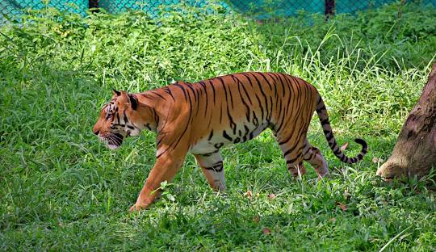
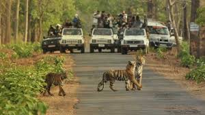

"Embark on an Unforgettable Wildlife Adventure at Bannerghatta National Park – Nature Awaits!"
Bannerghatta National Park, located just 22 kilometers from Bangalore, is a haven for nature lovers and wildlife enthusiasts. Spanning 104.27 square kilometers, this park is a diverse ecosystem home to numerous animal species, including tigers, lions, elephants, and more.Established in 1971, it is one of the most popular wildlife parks in the region. It includes a biological reserve, safari park, zoo, and butterfly park, making it a must-visit for nature lovers.
Scenic Views and Natural Beauty
Safari Rides: The highlight of Bannerghatta is the safari experience, where you can witness tigers, lions, and other wild animals up close. There are different safaris such as the Lion & Tiger Safari, Herbivore Safari, and Bear Safari.
Flora and Fauna: The area is rich in biodiversity, with various species of birds, butterflies, and flora that make it a haven for nature enthusiasts and photographers.
Zoo: The park houses a variety of animals, including endangered species like white tigers, Indian elephants, and sloth bears. The zoo is an educational experience for visitors of all ages.
Key Attractions
Butterfly Park: The Butterfly Park is a serene spot, home to over 50 species of butterflies, offering visitors a peaceful experience surrounded by nature.
Biological Park: A large area within the park dedicated to the conservation of wildlife, it showcases various flora and fauna in their natural habitat.
Elephant Camp: Learn about the elephants at the dedicated camp, where you can watch them bathe and feed.
How To Reach
By Bus: KSRTC buses operate routes to Bannerghatta from various parts of the city.
By Car: It’s a 45-minute drive from Bangalore.
Activities to Do
Safari Experience: Take a thrilling safari ride to see wild animals in their natural habitat. The Lion Safari and Tiger Safari are particularly popular.
Photography: Capture stunning images of wildlife, especially during safari rides or at the butterfly park.
Bird Watching: The park is home to a variety of birds, making it an ideal spot for bird watchers.
Nature Walks: Take a guided walk through the park to learn more about the flora and fauna, and enjoy the natural beauty.
Visitor Information
Best Time to Visit: The best time to visit is from October to March, during the cooler months. Early morning and late afternoon are ideal for safaris when animals are more active.
Entry Fee: There is an entry fee for the park and separate charges for safaris. Rates may vary, so it's best to check the latest prices online.
Local Cuisine
Food in the Park: There are small food stalls and restaurants inside the park offering refreshments, but it’s best to carry water and snacks, especially during safari rides.
Nearby Eateries: Explore local South Indian cuisine at nearby restaurants like MTR and VV Puram Food Street.
Visitor Tips
Safety: Follow all safety instructions during the safari. Do not attempt to feed or provoke the animals.
Carry Water: Stay hydrated as it can get quite hot, especially in the afternoon.
Booking Safaris: It’s advisable to book safari tickets in advance, especially during peak seasons or weekends.